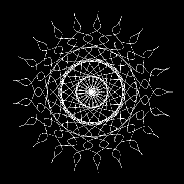
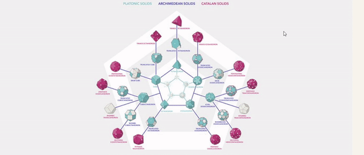
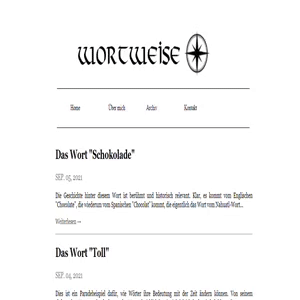
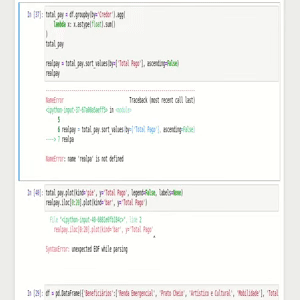
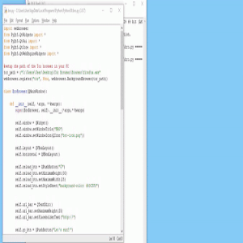
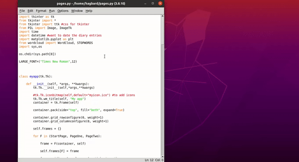

EMMA: A chatbot therapist. In contrast to the famous ELIZA chatbot which followed the Rogerian approach, this one follows the Jungian approach. Built with Python's NLTK package which makes tokenization and stemming extremely easy, in addition to PyTorch which was used to implement deep learning.
Read more →

Solid View: An interactive solid visualizer. The main page is an image map with links to interactive models of the Platonic solids, the Archimedean solids and the Catalan solids. Most functionalities have been implemented with the help of three.js. Models were built using Blender 2.93.
Read more →

Wortweise: My blog on German etymology. I write short posts about the origins of words and sayings. The site itself was built with Django with the goal of being as minimalistic as possible. Challenges included were pagination, a commentary system and a way to render images into posts.
Read more →

Analysis of Govt. Spending (CoV-19): This was my capstone project for the Google data analytics course. I analyzed data available online about the funds destined to combat and prevent Cov-19 spread in Brasilia. My main objective has been basically to identify some of the major creditors and their related areas of actuation.
Read more →

BRO: A lightweight browser built with QtWebEngine. The main inspiration was the Mozzarella Ashbadger browser presented in the book
Create GUI Applications with Python & Qt6 by Martin Fitzpatrick. I added the functionality to switch to the TOR browser.
Read more →

DreamCloud: A simple dream journal to record dreams. The WordCloud module permits the user to generate a word cloud with the content of all entries. It's still a work in progress.
Read more →